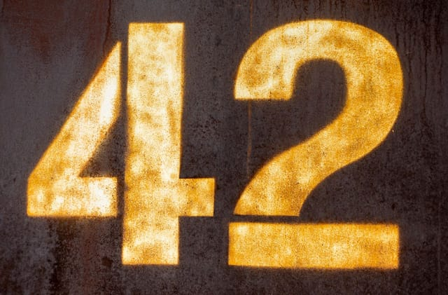

Forks Up
The three-finger fork 'em hand sign is the universal Sun Devils greeting. Raise your forks during the fight song, big plays, and team photos.
Sun Devils gameday is more than a football game, it's a set of rituals shared by students, alumni, and fans. Here are the traditions that make an afternoon in Tempe feel like home.
The three-finger fork 'em hand sign is the universal Sun Devils greeting. Raise your forks during the fight song, big plays, and team photos.
The team charges onto the field through the tunnel honoring Pat Tillman as the crowd rises. It's the loudest moment before kickoff.
The Sun Devil Marching Band leads Maroon and Gold and the fight song after every score. Learn the words and sing along with the section.
Tailgates fire up hours before kickoff across the lots near campus. A few tips to fit right in:
Lots and grills fill fast for big matchups. Getting in early means a better spot and time to soak up the atmosphere before gates open.
Deck out in ASU colors. Maroon shirts and gold accessories are the unofficial dress code, and the student section goes all in.
Early-season games in Tempe are hot. Bring water, shade, and sunscreen, hydration is part of the tradition here.

No name means more to Sun Devil football than Pat Tillman. A standout linebacker in the late 1990s, he helped lead ASU to an undefeated regular season and a Rose Bowl appearance, earning a reputation for playing with relentless heart.
After a successful NFL career with the Arizona Cardinals, Tillman walked away from the game to enlist in the U.S. Army following September 11, 2001. He was killed in 2004, and his legacy of service, humility, and courage remains woven into Sun Devil gameday.
Today his memory lives on through the Tillman Tunnel the team runs through, his retired #42, and Pat's Run, the annual 4.2-mile race that draws thousands to Tempe every spring. On gameday, look for the tributes and take a moment for the Sun Devil who gave everything.
Whether you bled maroon and gold as a student or you're visiting Tempe for the first time, these traditions belong to everyone in the stands. Learn a couple, join in, and you'll feel like a Sun Devil by the fourth quarter.